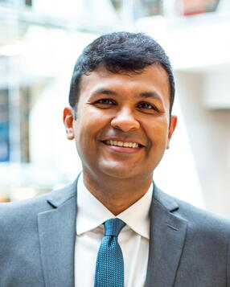

Dr. Arnab Nandi, an investigator with the Imageomics Institute and a faculty member in The Ohio State University’s Department of Computer Science and Engineering, was officially promoted to full professor.
Nandi, who originally joined Ohio State in 2012 and earned tenure as an associate professor in 2017, built a distinguished career at the intersection of database systems, human‑in‑the‑loop data analytics, and next‑generation query interfaces. His signature contributions include innovations such as GestureDB—gesture‑driven database querying—and Project Omni, a framework for truly multimodal data exploration.
Nandi’s work advances the Imageomics Institute’s mission to harness image‑driven, high‑dimensional biological data through knowledge‑guided machine learning, empowering more intuitive, interactive analysis. His leadership extends beyond research: he co‑founded The STEAM Factory, designed to foster interdisciplinary collaboration, and the OHI/O Hackathon, one of the region’s marquee student tech events.
The promotion reflects Nandi’s ongoing excellence in innovation, teaching, and cross-disciplinary impact, aligning closely with the AI for Good vision of transforming how complex image-based data catalyze scientific discovery across biology and beyond.